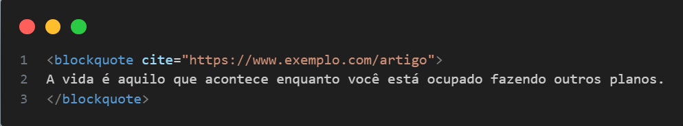

Tag <blockquote> — Citação longa em HTML5
O que é a tag <blockquote> ?
A tag <blockquote> é usada em HTML para marcar uma citação longa de outra fonte. Ela indica que o conteúdo dentro dela está sendo citado de outro lugar (livro, artigo, site, etc.).
Estrutura básica
Atributo cite
O atributo cite opcionalmente indica a URL da fonte da citação.
Obs: O navegador normalmente não exibe o link, mas ele pode ser usado por mecanismos de busca e ferramentas de acessibilidade.
Diferença entre <blockquote> e <q>
-
<blockquote>é para citações longas, geralmente em bloco, com quebra de linha. -
<q>é para citações curtas, dentro de um parágrafo e com aspas automáticas.
Semântica e Acessibilidade
Usar <blockquote> corretamente ajuda:
- Na compreensão semântica do conteúdo por motores de busca.
- Na acessibilidade para leitores de tela.
- No SEO, pois mostra que o conteúdo respeita direitos autorais e referencia fontes.
Pode conter...
Dentro de um <blockquote>, você pode colocar:
- Parágrafos (
<p>) - Citações curtas (
<q>) - Cabeçalhos (
<h1>,<h2>, etc.) - Listas, imagens, etc.